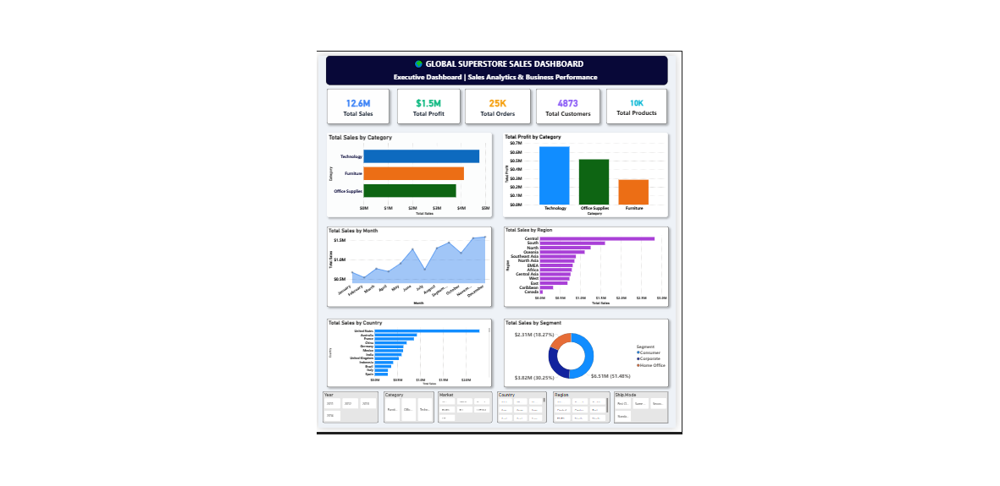

Records analyzed
DATA ANALYTICS × BUSINESS INTELLIGENCE
Global Superstore Analysis.
Turning retail data into business intelligence.
An end-to-end exploratory data analysis and business intelligence project focused on understanding sales performance, profitability, product categories and geographic trends through interactive Power BI visualizations.
Python
Pandas
NumPy
SQL
Power BI
Jupyter Notebook
Exploratory data analysis
Interactive business dashboard
Sales and profitability
01 / PROJECT OVERVIEW
Understanding the business data.
Exploring retail performance.
The Global Superstore dataset contains information about orders, customers, products, sales, discounts and profits across different regions and countries.
This project explores these records to identify meaningful patterns and communicate business performance through analytical visualizations.
Questions behind the analysis.
- Analyze overall sales performance.
- Understand profitability patterns.
- Identify strong-performing categories.
- Examine country-level sales.
- Explore sales trends over time.
02 / METHODOLOGY
From raw data to business insights.
The analytical stages behind the project.
Data Preparation
Prepare and clean the dataset for exploratory analysis.
Exploratory Analysis
Explore sales, profit, categories and geographic performance.
Data Visualization
Present analytical findings through meaningful charts and dashboards.
Business Insights
Interpret patterns in retail sales and communicate analytical findings.
03 / DASHBOARD SHOWCASE
Business performance. Visualized.
A Power BI dashboard presenting the results of the Global Superstore analysis.

04 / PROJECT DEMONSTRATION
See the dashboard in action.
A recorded demonstration of the Global Superstore Power BI dashboard.
05 / KEY FINDINGS
What the analysis revealed.
INSIGHT / 01
Category Performance
Technology recorded the highest overall sales among the major categories in the dataset.
CATEGORY ANALYSIS
INSIGHT / 02
Sales Trends
Monthly analysis helped identify changes in sales performance over time.
TREND ANALYSIS
INSIGHT / 03
Geographic Analysis
Country-level analysis highlighted differences in sales performance across markets.
GEOGRAPHIC ANALYSIS06 / TECHNICAL TOOLKIT
Technologies behind the analysis.
Data analysis
Data manipulation
Numerical computing
Structured data querying
Business intelligence
Analytical notebooks
EXPLORE THE PROJECT
Data. Analysis. Intelligence.
Explore the project repository or discover more analytics and application development projects in my portfolio.